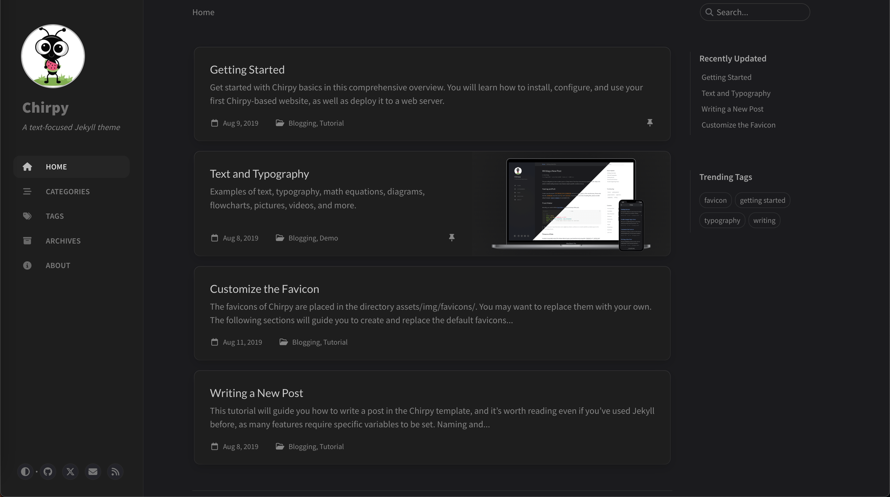

Jekyll 可以利用 GitHub Actions 来实现远程构建和部署。这种方式非常适合自动化生成和部署静态网站。
安装
主题

配置
图片
位置：/assets/images/${filename}
部署
1
2
3
4
5
6
7
8
9
10
11
12
13
14
15
16
17
18
19
20
21
| #!/bin/bash
cd ../ || { echo "cd ../ failed"; exit 1; }
npx prettier --write "./_posts/*.md" || { echo "Prettier format failed"; exit 1; }
git add . || { echo "git add failed"; exit 1; }
commit_message=$(date +"%Y-%m-%d %H:%M:%S")
git commit -m "$commit_message" || { echo "git commit failed"; exit 1; }
git push || { echo "git push failed"; exit 1; }
echo "所有命令执行成功"
|
Tips
Markdown文档格式化
1
| npx prettier --write _posts/2024-12-14-使用jekyll自动化构建站点.md
|
更新
个人电脑切换到MBA M3后，发现性能暴增，遂继续使用Hexo。部署使用git的方式即可
1
2
3
4
5
6
7
8
9
10
11
12
13
| #!/bin/bash
cd ../ || {
echo "cd ../ failed"
exit 1
}
npx prettier --write "./source/_posts/*.md" || { echo "Prettier format failed"; exit 1; }
hexo s
|